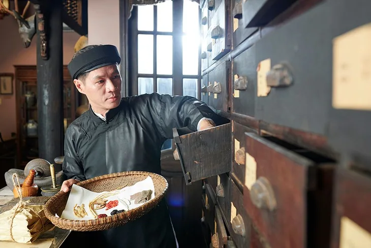

KHÁM PHÁ CHƯƠNG TRÌNH ĐÀO TẠO
Chọn lĩnh vực quan tâm để lọc ngành. Thông tin chi tiết về chương trình, chỉ tiêu và học phí cần đối chiếu với thông báo chính thức của nhà trường.

Y học cổ truyềnĐiều dưỡngDượcChăm sóc sắc đẹpKỹ thuật phục hình răngPhục hồi chức năngTiếng Trung QuốcTiếng Hàn QuốcTiếng Nhật BảnTiếng AnhKế toánQuản trị kinh doanhCông nghệ thông tinMarketingChế biến món ănY sĩ đa khoa
Đào tạo kiến thức y học cơ sở, kỹ năng thực hành chăm sóc sức khỏe theo chương trình được nhà trường công bố.
Đăng ký tư vấn ngành này →Y học cổ truyền
Định hướng kiến thức và kỹ năng trong lĩnh vực y học cổ truyền.
Đăng ký tư vấn ngành này →Điều dưỡng
Rèn luyện kỹ năng chăm sóc người bệnh và thực hành điều dưỡng.
Đăng ký tư vấn ngành này →Dược
Tiếp cận kiến thức dược học và kỹ năng chuyên môn ngành Dược.
Đăng ký tư vấn ngành này →Chăm sóc sắc đẹp
Định hướng thực hành các kỹ năng chăm sóc sắc đẹp và dịch vụ liên quan.
Đăng ký tư vấn ngành này →Kỹ thuật phục hình răng
Tiếp cận kỹ thuật và quy trình phục hình răng trong môi trường thực hành.
Đăng ký tư vấn ngành này →Phục hồi chức năng
Tìm hiểu kỹ thuật hỗ trợ phục hồi chức năng theo chương trình đào tạo.
Đăng ký tư vấn ngành này →Tiếng Trung Quốc
Định hướng kỹ năng sử dụng tiếng Trung trong học tập và công việc.
Đăng ký tư vấn ngành này →Tiếng Hàn Quốc
Bồi dưỡng năng lực tiếng Hàn và giao tiếp thực tế.
Đăng ký tư vấn ngành này →Tiếng Nhật Bản
Học tiếng Nhật hướng tới ứng dụng trong môi trường làm việc.
Đăng ký tư vấn ngành này →Tiếng Anh
Phát triển các kỹ năng tiếng Anh giao tiếp và chuyên môn.
Đăng ký tư vấn ngành này →Kế toán
Kiến thức nền tảng kế toán, nghiệp vụ và công cụ ứng dụng.
Đăng ký tư vấn ngành này →Quản trị kinh doanh
Định hướng quản trị, vận hành và tổ chức hoạt động kinh doanh.
Đăng ký tư vấn ngành này →Công nghệ thông tin
Học tập các nền tảng phần mềm, kỹ thuật số và thực hành CNTT.
Đăng ký tư vấn ngành này →Marketing
Khám phá truyền thông thương hiệu và các kỹ năng tiếp thị.
Đăng ký tư vấn ngành này →Chế biến món ăn
Rèn luyện nghiệp vụ bếp và kỹ thuật chế biến món ăn.
Đăng ký tư vấn ngành này →